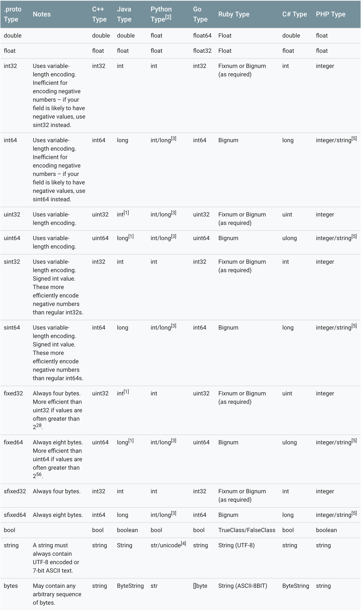

最近碰到一个关于
frameworks/base/core/proto/android/providers/settings/secure.proto文件中修改某个属性的问题，所以针对protobuf(.proto文件)进行一个学习了解。
Google Protocol Buffers，（简称Protobuf，协议缓冲区），类似json或XML，Google开源的支持多语言、跨平台的结构化数据序列化项目，但是比它们更小、更快、更简单。
Protobuf通过编写proto文件来定义消息格式或RPC服务定义。
proto模块介绍
在Framework模块中有个单独的模块：frameworks/base/core/proto/
查看该模块下的README.md和OWNDER文件有简单介绍。OWNER劝告开发人员需要熟悉该功能，谨慎修改。
README.md文件内容
- Android其他版本中，使用四个空格缩进，而非两个
- 基于Java文件的protos文件，使用该Java文件相同名称的包。例如
com.android.server.thing代替com.android.server.thing.proto - 如果proto描述了dumpsys的顶级输出，他就应该包含dump。这样更容易理解他是作为某个服务的dump输出，而不是该服务的数据结构。例如
WindowManagerServiceDumpProto和WindowManagerServiceProto
- 含有poroto后缀的message名称，他的内嵌的message的名称不需要有proto后缀，例如：
1
2
3
4
5
6
7
8
9
10
11
12
13message FooProto {
message Bar {
...
}
}
&&
message FooProto {
message BarProto { //没必要有proto后缀
...
}
}
如果proto代表一个对象的结构，后缀应该要有proto。并且还请包含该原是对象的完整包路径，来作为对这个proto message的注释。
在字段中包含单位名字，例如：
screen_time_msVSscreen_time, orfile_size_bytesorfile_size_mebibytesVSfile_size保留字段号50000-100000，供原始设备制造商使用。
编写proto文件
范例helloworld.proto
代码在https://github.com/grpc/grpc/blob/master/examples/protos/helloworld.proto
1 | //版本号，默认版本是2 |
protobuf和其他编程语言的类型比较

字段编号
字段编号是Protobuf的重要组成部分。它们用于标识二进制编码数据中的字段，这意味着它们不能从版本更改为服务版本。优点在于可以实现向后兼容性和向前兼容性。只要处理丢失值的可能性，客户端和服务就会忽略他们不知道的字段编号。
在二进制格式中，字段号与类型标识符组合在一起。1到15之间的字段编号可以使用其类型编码为单字节。从16到2047的数字需要2个字节。如果出于任何原因需要将超过2047个字段，则可以更高。字段号1到15的单字节标识符提供更好的性能，因此，你应将其用于最基本的常用字段。
限定符说明
| 限定符 | 说明 |
|---|---|
| required | 必须字段，必须设置该字段的值 |
| optional | 可选字段，有选择性的设置或者不设置该字段的值 |
| repeated | 表示该字段可以被重复任意多次包含 |
包package
可以用指定package以避免类型命名冲突：
1 | package foo.bar; |
也可以用类型的全限定名来引用它：
1 | message Foo { |
Note:指定包名后，会对生成的代码产生影响，以Java为例，生成的类会以你指定的package作为包名。
修改规则
如果修改正在使用的proto文件，比如为类型增加一个字段，protobuf支持这种修改而不影响已有的服务，不过需要遵循一定的规则：
- 不改变已有字段的字段编号
- 当增加一个新的字段的时候，老系统序列化后的数据依然可以被新的格式所解析，只不过需要处理新加字段的缺省值。
- 字段也可以被移除，但是建议
Reserved这个字段，避免将来会使用这个字段 - int32, uint32, int64, uint64 和 bool类型都是兼容的
- sint32 和 sint64兼容，但是不和其它整数类型兼容
- string 和 bytes兼容，如果 bytes 是合法的UTF-8 bytes的话
- 嵌入类型和bytes兼容，如果bytes包含一个消息的编码版本的话
- fixed32和sfixed32, fixed64和sfixed64 enum和int32, uint32, int64, uint64格式兼容
嵌套类型
通过协议缓冲区（Protobuf）可以在其他消息中嵌套消息定义。 下面的示例演示如何创建嵌套消息类型：
1 | message Outer { |
repeated修饰符
如果一个字段被repeated修饰，则表示它是一个列表类型的字段，如下所示：
1 | message SearchRequest { |
如果希望可以预留一些数字标签或者字段可以使用reserved修饰符：
1 | message Foo { |
保留字段reserved
Protobuf中的向后兼容性保证依赖于始终表示相同数据项的字段编号。如果从服务新版本中的消息中删除了字段，则不应重复使用该字段编号。
可以使用reserved关键字强制执行此情况。
如果定义Stock的消息中删除某字段，则应保留其字段编号，如以下示例所示。
1 | syntax "proto3"; |
还可以将reserved关键字用作将来可能添加的字段的占位符。 您可以使用to关键字将连续字段数表示为范围。
1 | syntax "proto3"; |
Any和OneOf字段
Protobuf提供了两个用于处理可能属于多个类型的值的更简单选项。
Any类型可以表示任何已知的Protobuf消息类型。
使用oneof关键字来指定在任何消息中只能设置一个字段范围中的一个字段。
- Any是Protobuf的”已知类型”：一系列有用的可重复使用的消息类型，具有所有支持语言的实现。若要使用Any类型，必须导入
google/protobuf/any.proto定义
1 | syntax "proto3" |
- Oneof是一项语言功能：编译器在生成message类时处理oneof关键字。使用oneof指定ChangeNotification消息可能如下所示：
在整个消息声明中，oneof集内的字段必须具有唯一的字段编号。
1 | message Stock { |
Note:
- 设置属于oneof集一部分的任何字段都将自动清除该集中的任何其他字段。不能将repeated与oneof一起使用。相反，可以创建包含重复字段或oneof集的嵌套消息，以解决此限制。
- oneof块中的字段不支持repeated。
枚举
上面使用枚举来确定Oneof字段的类型。可以定义自己的枚举类型，Protobuf将它们编译为C#（或者其他语言）枚举类型。
由于Protobuf可以用于各种语言，因此枚举的命名约定与C#约定不同。
但是，代码生成器将名称转换为传统的C#大小写。如果字段名称的Pascal大小写以枚举名称开头，则将其删除。
例如，在下面的Protobuf枚举中，字段用预缀为ACCOUNT_STATUS。
第一个枚举值的数值必须是0且至少有一个枚举值，否则编译报错。编译后编译器会为你生成对应语言的枚举类。
1 | enum AccountStatus { |
由于编码原因，出于效率考虑，官方不推荐使用负数作为枚举值的数值。
类型默认值
- string类型的默认值是空字符串
- bytes类型的默认值是空字节
- bool类型的默认值是false
- 数字类型的默认值是0
- enum类型的默认值是第一个定义的枚举值
- message类型的默认值与语言相关
- repeated修饰的字段默认值是空列表
import public的传递引用功能
1 | ////////////// |
从这个例子中可以看到import关键字导入的定义仅在当前文件有效，不能被上层使用方引用（client.proto无法使用other.proto中的定义）
而import public关键字导入的定义可以被上层使用方引用（client.proto可以使用new.proto中的定义），import public的功能可以看作是import的超集，在import的功能上还具有传递引用的作用。
option选项
选项不对message的定义产生任何的效果，只会在一些特定的场景中起到作用：
option java_package = "com.example.foo";编译器为以此作为生成的Java类的包名，如果没有该选项，则会以pb的package作为包名。option java_multiple_files = true;该选项为true时，生成的Java类将是包级别的，否则会在一个包装类中。option optimize_for = CODE_SIZE;该选项会对生成的类产生影响，作用是根据指定的选项对代码进行不同方面的优化。int32 old_field = 6 [deprecated=true];把字段标为过时的。
protoBuf缺点
Protbuf相比XML来说，主要优点是性能高。也有不足之处，功能简单，无法用来表示复杂的概念。
由于文本并不适合用来描述数据结构，所以Protobuf也不适合用来对基于文本的标记文档（如HTML建模。另外，由于XML具有某种程度上的自解释性，它可以被人直接读取编辑，在这一点上Protobuf以二进制的方式存储，除非有.proto定义，否则无法直接读出Protobuf的任何内容。